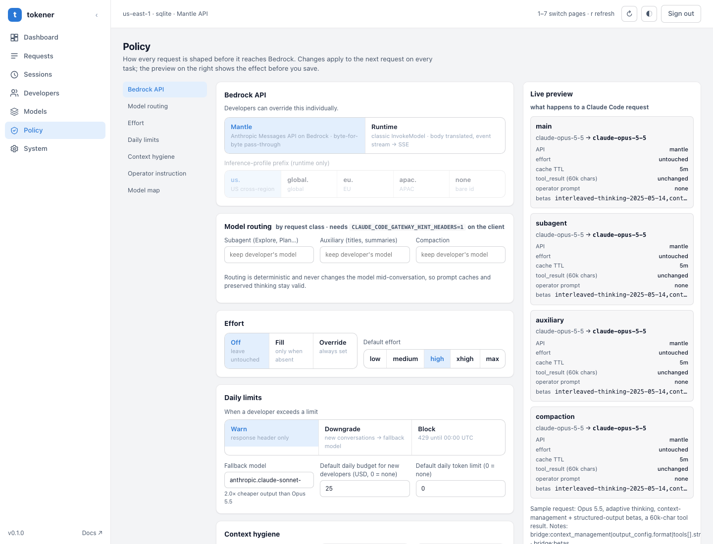
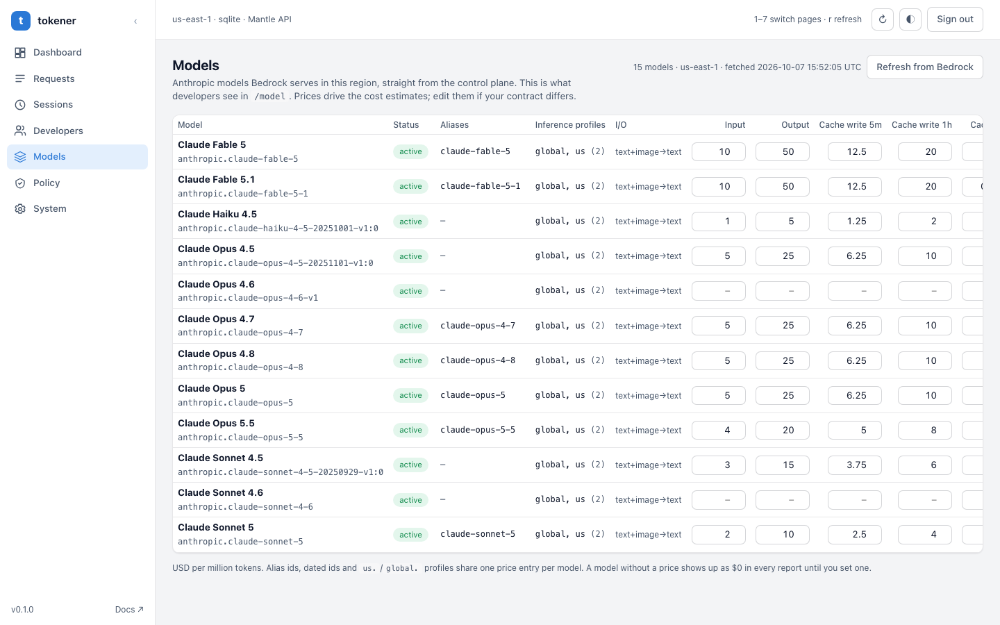

Claude Code on Amazon Bedrock, With a Cost Meter and a Brake.
tokener is a self-hosted FinOps gateway that sits between your developers' Claude Code (and production AI agents) and Amazon Bedrock, inside your own AWS account.
Every request is measured by developer, session, tenant, and model; auxiliary work is routed to cost-efficient models; and daily USD budgets are enforced before runaway sessions inflate your AWS bill.
Agentic Coding Is the Fastest-Growing Line On Your AWS Bill.
Claude Code re-sends the whole conversation on every turn of its agent loop.
For a ten-person engineering team, the monthly Bedrock token bill quickly lands in the $2,500 to $4,000+ range, and AWS Cost Explorer cannot tell you which developer, repository, session, or subagent drove it.
30+
API calls per session
Every tool call is a turn, and every turn carries up to 100K+ tokens of context. A long session costs far more than a short one, but without request-level telemetry no one knows which sessions are bleeding budget.
~15%
Spent on side work
Subagents, session titles, summaries, and context compaction run on the same top-tier Opus model as the main reasoning loop unless a policy layer steers them to Sonnet or Haiku.
0
Guardrails per developer
Amazon Bedrock bills the AWS account, not the individual engineer. One runaway agent loop or oversized 20K-token build log looks identical to productive engineering until the invoice arrives.
How It Works
One Gateway in the Middle. Two Settings on Each Laptop.
tokener implements Claude Code's official gateway protocol.
It authenticates the developer, applies deterministic policy, checks daily USD/token limits, signs the request with SigV4 for Amazon Bedrock, and streams the SSE response back unchanged while recording token telemetry.
Conversation content is transformed in memory and never stored on disk.
Developer laptopClaude CodeBase URL + personal token. Nothing installed.
HTTPS → ← SSE↓ HTTPS · SSE ↑
Your AWS accounttokener gatewayALB → ECS Fargate
Identity
Policy
Limits
Sign & forward
Meter
SigV4 →↓ SigV4
Same accountAmazon BedrockAnthropic Messages API (Mantle) or InvokeModel (Runtime)
The administrator creates a developer profile in the console and receives a scoped token plus a ready-made settings block.
The developer pastes it into ~/.claude/settings.json, runs claude, and sees the gateway under /status.
No IAM credentials ever reach a laptop, and models in the /model menu come live from Amazon Bedrock.
// ~/.claude/settings.json on each developer machine
{
"env": {
"ANTHROPIC_BASE_URL": "https://claude-gw.internal.company.com",
"ANTHROPIC_AUTH_TOKEN": "cgw_live_9f8a...",
"CLAUDE_CODE_GATEWAY_HINT_HEADERS": "1",
"CLAUDE_CODE_ENABLE_GATEWAY_MODEL_DISCOVERY": "1"
}
}
Capabilities
Visibility, Policy, and Control. In That Order.
Visibility
Every request is logged by developer, session, model, and request class: main conversation, subagent, auxiliary background, or compaction.
Cost and policy savings dashboard with 14-day rolling trends
Most expensive sessions and per-turn context growth curves
Prompt cache hit ratio and output-to-input footprint
Request log with filters, live refresh, and CSV export
Native CloudWatch metrics, dashboards, and spend alarms
Policy
Deterministic transformations to the request body. The same input always produces the same output, keeping Anthropic prompt caching 100% valid.
Route subagents to Sonnet and background title/summary work to Haiku
Enforce a default reasoning effort level when the client sends none
Append team-wide coding guardrails as the final system block
Trim oversized tool output (keeping head and tail) so 20K build logs stop repeating
Strip unsupported fields before Bedrock rejects the payload
Control
Per-developer and per-team limits configured in the console and enforced on the very next turn with zero redeployments.
Independent daily USD budget and daily token cap per engineer
Warning header injected at 80% of either threshold
On overrun: warn, auto-downgrade new chats, or hard-block (HTTP 429)
Model allowlist and Bedrock API selection per developer
Token rotation and revocation effective within 60 seconds
What tokener Never Does
No lossy summarizing, no deleting messages, no mid-conversation model swaps.
Naive gateways mutate conversation history or swap models mid-thread, which invalidates the Anthropic prompt cache and breaks extended thinking blocks - costing more than they save. Every change tokener makes is cache-stable for the life of a session.
Expected Savings
19% With Safe Policies. 33% With Effort Tuning.
Modeled for ten developers on Claude Opus, six sessions per day, at standard Bedrock pricing.
Each lever is a single toggle in the admin console; effects compound cleanly.
Optimization Lever
What Changes
Quality Risk
Team Spend Effect
Background work to Haiku
Session titles and background summaries leave the top-tier Opus model
None
-4%
Subagents to Sonnet
Explore and Plan subagents search and summarize on Sonnet
Low
-6%
Tool output trimming
A 20K-token build log is trimmed to ~5K and stops being re-billed on every subsequent turn
Low
-9%
Effort xhigh → high
Right-sized thinking budget on routine coding tasks
Measure per team
-14%
Phase 1 · Safe policies only
$2,560 → $2,070 / month (10-engineer pod)
Zero UX impact
-19%
Phase 2 · Safe policies + effort tuning
$2,560 → $1,720 / month (10-engineer pod)
Measured pilot
-33%
The gateway infrastructure itself (ECS Fargate, ALB, DynamoDB, CloudWatch) runs inside your AWS account for ~$75 to $110/month and is paid back by the first 3% of token savings.
Live Admin Console
Change Policy at 5:00 PM. See the Effect at 5:01 PM.
A fast, single-page console served directly by the gateway inside your VPC: Dashboard, Requests, Sessions, Developers, Models, Policy, and System Audit Log.

Policy Editor. Configure Bedrock API mode, model routing per request class, effort levels, daily USD limits, and context hygiene with a live preview before saving.
Per-Developer Governance. Assign individual daily USD budgets, token caps, Bedrock API modes, and model allowlists with instant settings generation.

Live Bedrock Model Catalog. Automatically discovers active Anthropic models and cross-region inference profiles in your AWS region, with custom EDP price overrides.
Security & Data Sovereignty
Your AWS Account, Your VPC. We Have Zero Access.
tokener deploys via CloudFormation or Terraform directly into your AWS account.
Prompts and code travel strictly from developer machines to your private ECS Fargate tasks and Amazon Bedrock - never touching an external SaaS proxy.
Both Amazon Bedrock invocation paths are supported: Mantle (the native Anthropic Messages API endpoint on Bedrock) and Runtime (classic InvokeModel with us., eu., apac., or global. inference profiles).
HTTPS only, private VPC subnetsGateway tasks run on Amazon ECS Fargate in private subnets behind your Application Load Balancer with TLS termination.
Single IAM role calls BedrockOnly the ECS task role holds Bedrock invoke permissions. Developers never need local AWS IAM keys on their laptops.
Tokens SHA-256 hashed, prompts never storedDeveloper tokens are stored as SHA-256 hashes in DynamoDB. Telemetry records token counts, model IDs, and session IDs - never prompt or code text.
CIDR-gated Admin Console & Audit TrailReachable only from your approved corporate/VPN CIDR ranges and protected by AWS Secrets Manager credentials.
Rapid Deployment
From Deploy to First Metered Request In Under 30 Minutes.
Launch Stack
Deploy the CloudFormation or Terraform module with your ACM certificate and allowed admin CIDR ranges in any Bedrock-enabled AWS region.
~8 minutes
Point Internal DNS
Create a Route 53 alias/CNAME to the load balancer and retrieve the generated admin token from AWS Secrets Manager.
~5 minutes
Onboard Engineers
Create developer profiles with daily USD budgets and model allowlists. Distribute each engineer's 6-line Claude Code settings block.
1 minute per dev
Measure, Then Tune
Run in pure observability mode for week one, inspect the session cost curves, then enable Haiku/Sonnet routing and output trimming.
Standardized AI skills and custom FastMCP servers across Claude Code, Cursor, and Gemini CLI delivering 10x engineering velocity and ~60% faster onboarding.
Open-source dbt package automating Hybrid Data Vault 2.0 (Raw + Business Vault) to dimensional Kimball star schemas, accelerating analytics delivery by 30%+.
Want to See Where Your Claude Code & Bedrock Tokens Go?
Tell us your engineering team size and primary AWS Bedrock region.
Our principal architects will help you deploy tokener in your AWS account and review your first week of session telemetry together.